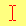
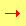
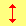

Summary
The cursor CSS property specifies the mouse cursor displayed when the mouse pointer is over an element.
| Initial value | auto |
|---|---|
| Applies to | all elements |
| Inherited | yes |
| Media | visual, interactive |
| Computed value | as specified, but with <url> values made absolute |
| Animation type | discrete |
| Canonical order | the unique non-ambiguous order defined by the formal grammar |
Syntax
/* Keyword value only */ cursor: pointer; cursor: auto; /* Using URL and coordinates */ cursor: url(cursor1.png) 4 12, auto; cursor: url(cursor2.png) 2 2, pointer; /* Global values */ cursor: inherit; cursor: initial; cursor: unset;
The cursor property is specified as zero or more <uri> values, separated by commas, followed by a single mandatory keyword value. Each <uri> should point to an image file. The browser will try to load the first image specified, falling back to the next if it can't, and falling back to the keyword value if no images could be loaded (or if none were specified).
Each <uri> may be optionally followed by by a pair of space-separated numbers, which represent <x><y> coordinates. These will set the cursor's hotspot, relative to the top-left corner of the image.
For example, this specifies two images using <uri> values, providing <x><y> coordinates for the second one, and falls back to the progress keyword value if neither image could be loaded:
cursor: url(one.svg), url(two.svg) 5 5, progress;
Values
- <
uri> - A
url(…)or a comma separated listurl(…), url(…), …, pointing to an image file. More than one<uri>may be provided as fallback, in case some cursor image types are not supported. A non-URL fallback (one or more of the other values) must be at the end of the fallback list. See Using URL values for the cursor property for more details. <x><y>- Optional x- and y-coordinates. Two unit-less non-negative numbers less than 32.
- Keyword values
-
Move mouse over value for testing:
Category CSS value Actual Description General autoThe browser determines the cursor to display based on the current context.
E.g. equivalent totextwhen hovering text.default
Default cursor, typically an arrow. noneNo cursor is rendered. Links & status context-menu
A context menu is available under the cursor.
Only IE 10 and up have implemented this on Windows: bug 258960.helpIndicating help is available. pointer
E.g. used when hovering over links, typically a hand. progress
The program is busy in the background but the user can still interact with the interface (unlike for wait).waitThe program is busy (sometimes an hourglass or a watch). Selection cell
Indicating that cells can be selected. crosshair
Cross cursor, often used to indicate selection in a bitmap. text Indicating text can be selected, typically an I-beam. vertical-text
Indicating that vertical text can be selected, typically a sideways I-beam. Drag and drop alias
Indicating an alias or shortcut is to be created. copy
Indicating that something can be copied. move
The hovered object may be moved. no-dropCursor showing that a drop is not allowed at the current location.
bug 275173 on Windows and Mac OS X, "no-drop is the same as not-allowed".not-allowed
Cursor showing that something cannot be done. Resize & scrolling all-scrollCursor showing that something can be scrolled in any direction (panned).
bug 275174 on Windows, "all-scroll is the same as move".col-resize
The item/column can be resized horizontally. Often rendered as arrows pointing left and right with a vertical bar separating. row-resize
The item/row can be resized vertically. Often rendered as arrows pointing up and down with a horizontal bar separating them. n-resize
Some edge is to be moved. For example, the se-resizecursor is used when the movement starts from the south-east corner of the box.
In some environments, an equivalent bidirectional resize cursor is shown. For example,n-resizeands-resizeare the same asns-resize.e-resize s-resize
w-resize
ne-resize
nw-resizese-resize
sw-resize
ew-resizeIndicates a bidirectional resize cursor. ns-resize nesw-resizenwse-resizeZoom zoom-in
Indicates that something can be zoomed (magnified) in or out.
zoom-out
Grab grab
Indicates that something can be grabbed (dragged to be moved).
grabbing
Formal syntax
[ [ <url> [ <x> <y> ]? , ]* [ auto | default | none | context-menu | help | pointer | progress | wait | cell | crosshair | text | vertical-text | alias | copy | move | no-drop | not-allowed | e-resize | n-resize | ne-resize | nw-resize | s-resize | se-resize | sw-resize | w-resize | ew-resize | ns-resize | nesw-resize | nwse-resize | col-resize | row-resize | all-scroll | zoom-in | zoom-out | grab | grabbing ] ]
Examples
.foo {
cursor: crosshair;
}
/* use prefixed-value if "zoom-in" isn't supported */
.bar {
cursor: -webkit-zoom-in;
cursor: zoom-in;
}
/* standard cursor value as fallback for url() must be provided (doesn't work without) */
.baz {
cursor: url(hyper.cur), auto;
}
Specifications
| Specification | Status | Comment |
|---|---|---|
| CSS Basic User Interface Module Level 3 The definition of 'cursor' in that specification. |
Proposed Recommendation | Addition of several keywords and the positioning syntax for url(). |
| CSS Level 2 (Revision 1) The definition of 'cursor' in that specification. |
Recommendation | Initial definition |
Browser compatibility
We're converting our compatibility data into a machine-readable JSON format. This compatibility table still uses the old format, because we haven't yet converted the data it contains. Find out how you can help!
| Feature | Chrome | Edge | Firefox (Gecko) | Internet Explorer/Edge | Opera | Safari |
|---|---|---|---|---|---|---|
auto, crosshair, default, move, text, wait, help,n-resize, e-resize, s-resize, w-resize,ne-resize, nw-resize, se-resize, sw-resize |
1.0 | (Yes) | 1.0 | 4.0[1] | 7.0 | 1.2 |
pointer, progress |
1.0 | (Yes) | 1.0 | 6.0 | 7.0 | 1.2 |
url() |
1.0 | (Yes) | 1.5 4.0[2] |
6.0 | ? | 3.0 |
Positioning syntax for url() values |
(Yes) | No support | (Yes) | No support | ? | (Yes) |
not-allowed, no-drop, vertical-text, all-scroll,col-resize, row-resize |
1.0 | (Yes) | 1.5 |
6.0
|
10.6 | 3.0 |
alias, cell, copy,ew-resize, ns-resize, nesw-resize, nwse-resize |
1.0 | (Yes) | 1.5 | 10.0 | 10.6 | 3.0 |
context-menu |
1.0[3] | (Yes) | 1.5[3] | 10.0 | 10.6 | 3.0 |
none |
5.0 | (Yes) | 3.0 | 9.0 | 15.0 | 5.0 |
inherit |
1.0 | (Yes) | 1.0 | 8.0 | 9.0 | 1.2 |
zoom-in, zoom-out |
1.0 -webkit- |
(Yes) | 1.0 -moz- 24.0 |
13 | 11.6 15-23 -webkit- 24 |
3.0 -webkit- 9 |
grab, grabbing |
1.0 -webkit- 22.0 -webkit-[4] |
(Yes) | 1.5 -moz- 27.0 |
14 | (Yes) | 4.0 -webkit- |
| Feature | Android | Edge | Firefox Mobile (Gecko) | IE Phone | Opera Mobile | Safari Mobile |
|---|---|---|---|---|---|---|
auto, crosshair, default, move, text, wait, help,n-resize, e-resize, s-resize, w-resize,ne-resize, nw-resize, se-resize, sw-resize |
No support | (Yes) | ? | ? | ? | ? |
pointer, progress |
No support | (Yes) | ? | ? | ? | ? |
url() |
No support | (Yes) | ? | ? | ? | ? |
Positioning syntax for url() values |
No support | No support | ? | ? | ? | ? |
not-allowed, no-drop, vertical-text, all-scroll,col-resize, row-resize |
No support | (Yes) | ? | ? | ? | ? |
alias, cell, copy,ew-resize, ns-resize, nesw-resize, nwse-resize |
No support | (Yes) | ? | ? | ? | ? |
context-menu |
No support | (Yes) | ? | ? | ? | ? |
none |
No support | (Yes) | ? | ? | ? | ? |
inherit |
No support | (Yes) | ? | ? | ? | ? |
zoom-in, zoom-out |
No support | (Yes) | ? | ? | ? | ? |
grab, grabbing |
No support | (Yes) | ? | ? | ? | ? |
[1] In IE11, when cursor is applied to an element and this element is underneath an open <select> menu and the user hovers over a <select> menu item that's on top of said element, the cursor for said element will be displayed rather than the <select>'s normal cursor. See IE bug 963961.
[2] Support for this was added in Mac OS X.
[3] Only supported in Mac OS X and Linux.
[4] Support for this was added in Windows.